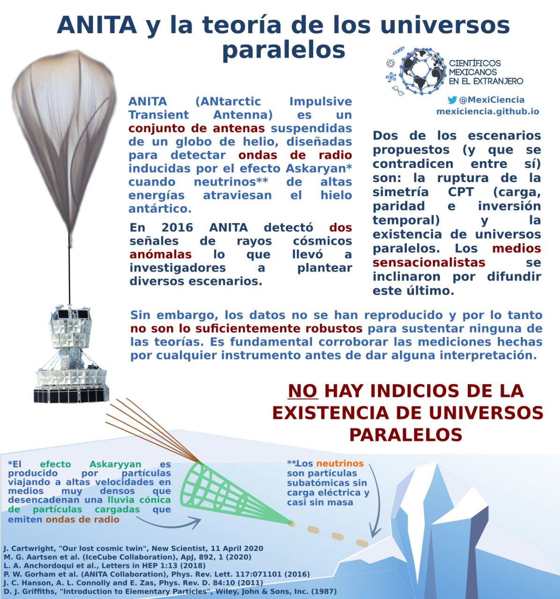

ANITA y la teoría de los universos paralelos
En fechas recientes aparecieron noticias 📰 con titulares como: “Científicos de la NASA descubren un universo paralelo con el tiempo invertido” 🌌⏳ Esa noticia es falsa 🙅 ya que no existe evidencia suficiente.
ANITA (ANtarctic Impulsive Transient Antenta) es un conjunto de antenas suspendidas de un globo de helio, diseñaas para detectar ondas de radio inducidas por el efecto Askaryan cuando neutrinos de altas energías atraviesan el hielo antártico. ANITA a antenita que detectó las particulitas anómalas 📡. Nuestro equipo de físicos 👩🔬👨🔬 se dio a la tarea de reunir la información completa para explicarte por qué no existen los universos paralelos.
ANITA detectó 📡 dos rayos cósmicos anómalos. La explicación que se dio a dicho suceso fue que para que estos rayos existieran como tal, se debía romper la simetría CPT (carga, paridad, inversión temporal) ➕➖🔃⌛ ó ¡que existían los universos paralelos! 🌌 Ambas hipótesis son falsas y te explicamos por qué.
Primero que nada, ¿a qué se refieren con un rayo cósmico anómalo? A uno que tendría que provenir de un neutrino tau ¡que fuese partícula de Majorana y que además tuvieran una enorme masa y su quiralidad fuera dextrógira!
Nada sencillo el asunto 🤔 Vamos por partes.
1️⃣ La simetría CPT se debe cumplir para mantener la invariancia de las leyes dinámicas que rigen la física.
2️⃣ Un neutrino es una partícula subatómica ⚛ con masa muy pequeña, sin carga y cuya interacción con la materia es casi indetectable.
3️⃣ La quiralidad 🤲 de los neutrinos tau es levógira ⏪ y la de su anti-partícula (los anti-neutrinos tau) es dextrógira ⏩
4️⃣ Una partícula de Majorana es una partícula que es su propia anti-partícula. Desde aquí ya se puede ver lo complicado del asunto, ¿no?
¡Compliquémoslo un poco más! La energía ⚡️ de las dos señales observadas 👀 era muy grande, del orden de medio exaelectronvoltio. Además, su polarización se encontraba invertida. Hechos que contradicen a lo establecido con el modelo estándar. ¿De qué estamos hablando realmente?
Sigamos con los hechos científicos:
5️⃣ El modelo estándar de la física de partículas es una teoría que describe la materia y las interacciones entre sus partículas elementales.
6️⃣ El neutrino pertenece a las partículas elementales llamadas leptones en el modelo estándar.
7️⃣ Un exaelectronvolt (EeV) es una magnitud de energía con un orden de 1x10^18 eV, ¡esos son muchoooos ceros!
8️⃣ En el modelo estándar se define que la energía del neutrino tau debe ser menor a 0.18x10^9 eV ⚡️ Vemos entonces que las señales exceden los lineamientos del modelo estándar. Para que se cumpla la simetría CPT, tendrían que existir otro tanto de neutrinos pesados que también fueran partículas de Majorana y que al interactuar con la materia en la tierra 🌎, se desintegraran en un bosón de Higgs y un neutrino tau que ANITA 📡 detectaría ¡Uff! ¡Desglosemos!
9️⃣ Que sean partículas de Majorana implica que el neutrino sería en sí mismo partícula y antipartícula ⤴️⤵️
🔟 Que fuesen más partículas de Majorana y que se desintegre en un boson de Higgs 🎇, explica la repentina aparición de una masa tan grande para un neutrino.
1️⃣1️⃣ ¿Qué es un boson de Higgs? El bosón de Higgs es una partícula elemental del modelo estándar que fue descubierta en 2013 y que explica la masividad de las partículas mismas. Al escuchar todo lo que se requiere para cumplir con la simetría CPT y el modelo estándar, la propuesta de la existencia de Universos Paralelos para justificar los datos suena más excitante, ¿no?
Pues si existiesen los universos paralelos 🔃, ¡sería muy fácil poner al dichoso neutrino dextrógiro e inexistente en un universo paralelo donde simplemente el tiempo corriera hacia atrás⌛️⏳! ¡Y así no se incumpliría con el modelo estándar!
Pero esto no es posible porque según la física relativista, si ponemos un observador en el universo y otro en un universo paralelo, ambos se desplazarían temporalmente hacia adelante desde su marco de referencia. Es decir, el tiempo corre en el mismo sentido para ambos universos.
Sin embargo, en un marco de referencia absoluto la flecha del tiempo tendría que ir hacia el futuro⏩⏩ para el universo y hacia el pasado ⏪⏪ para el antiuniverso (universo paralelo) y eso no es posible ¡porque no existen los marcos de referencia absolutos!
